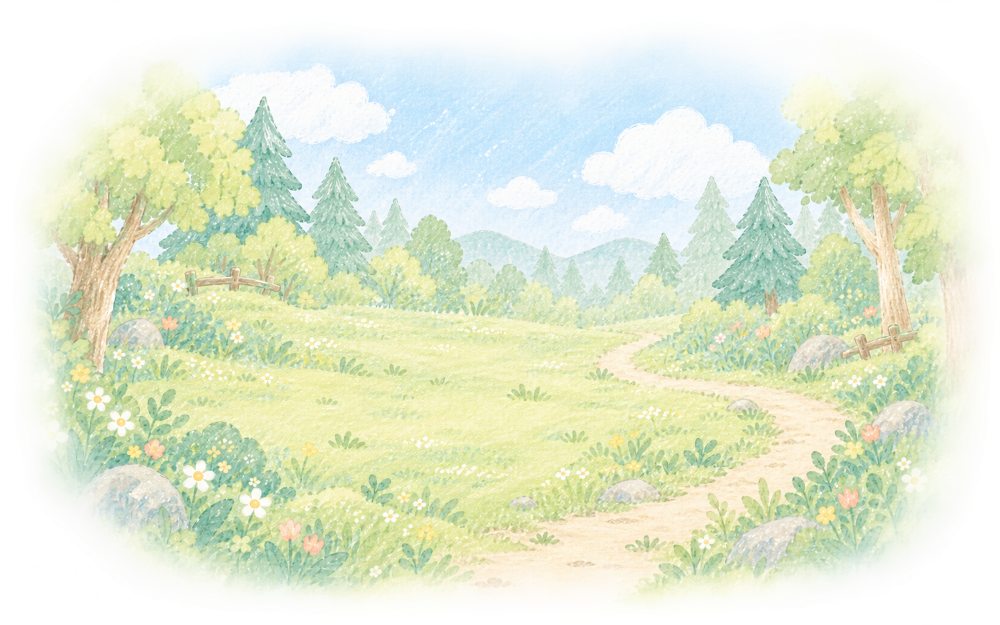

Section 2-2
Section 2-6

Anonymous by default. Quotes in the walk are short excerpts; full texts are in the reading room below.
Student Essays · 학생 에세이 원문

Anonymous by default. Quotes in the walk are short excerpts; full texts are in the reading room below.
Student Essays · 학생 에세이 원문